Some photographs of various regions of Bangladesh and India which I captured while wandering. It gives a sense of perception of local people and their activity, textures of nature, craft of landscapes.
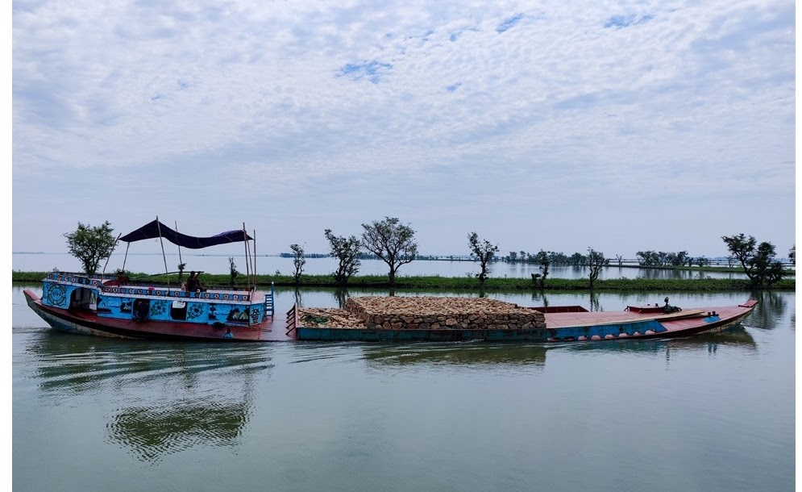
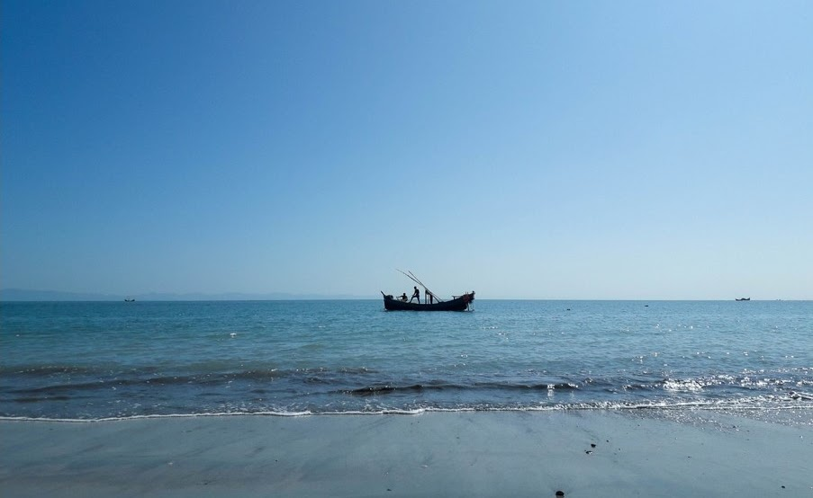
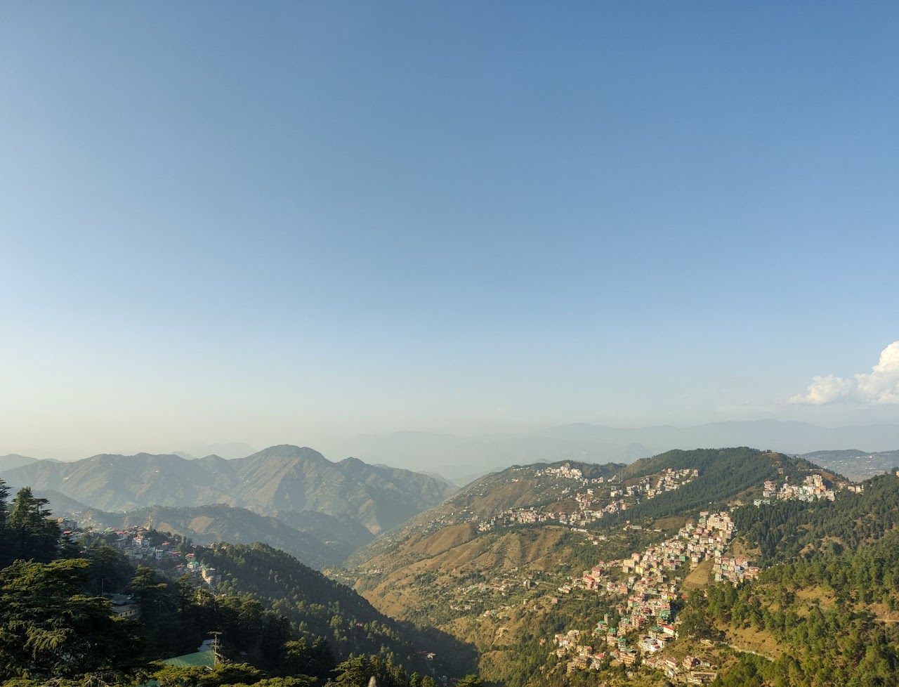
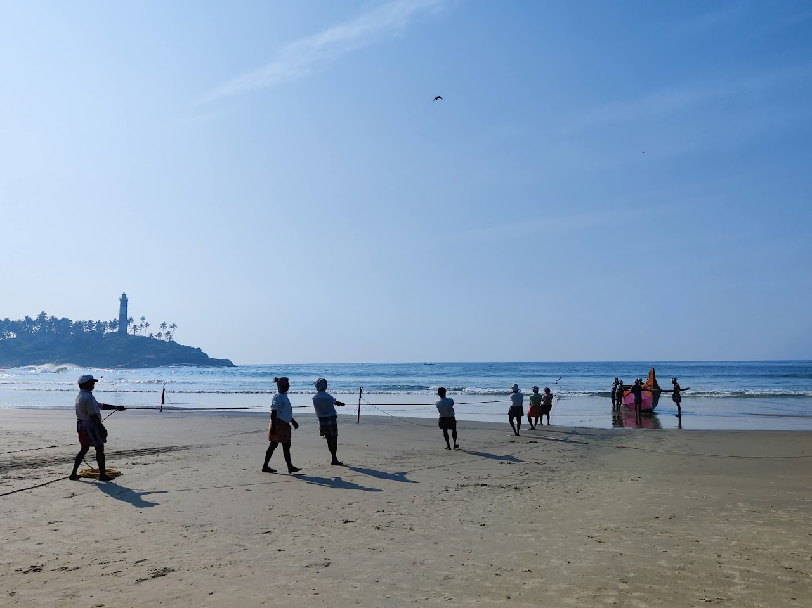
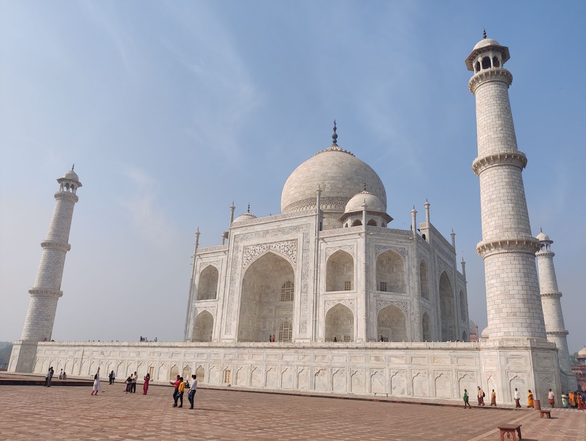
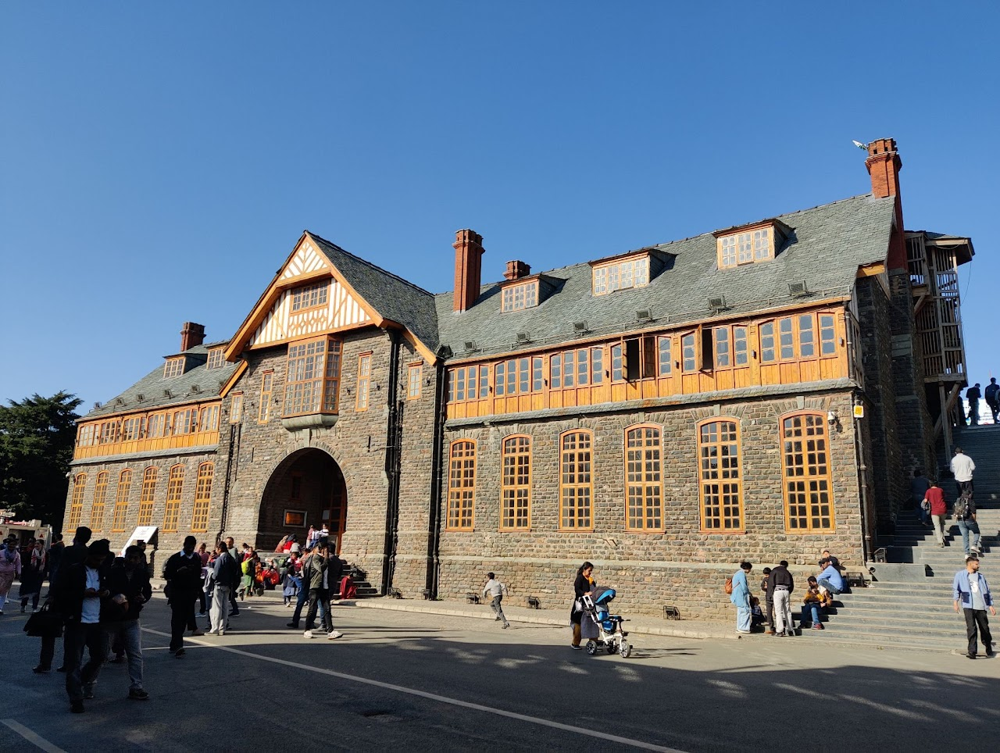
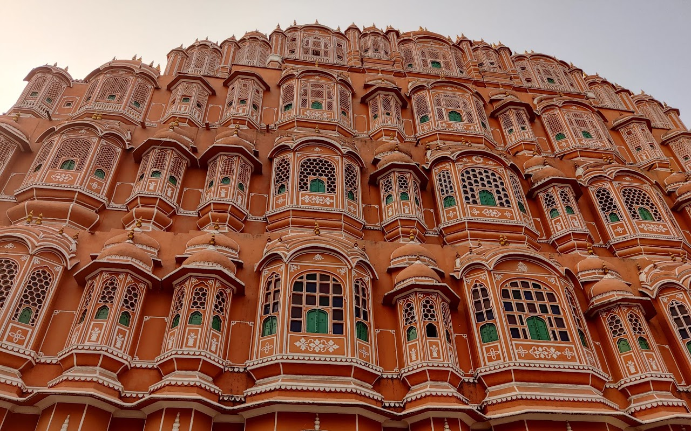
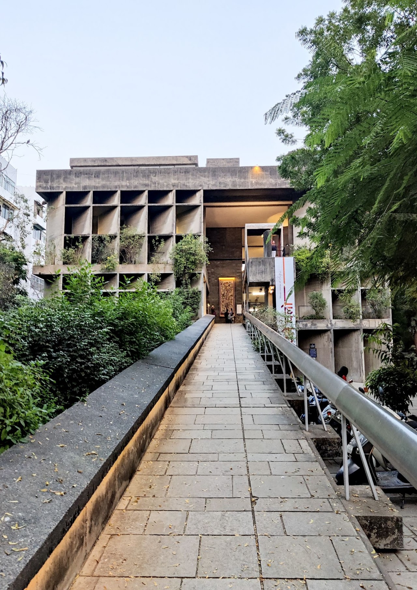
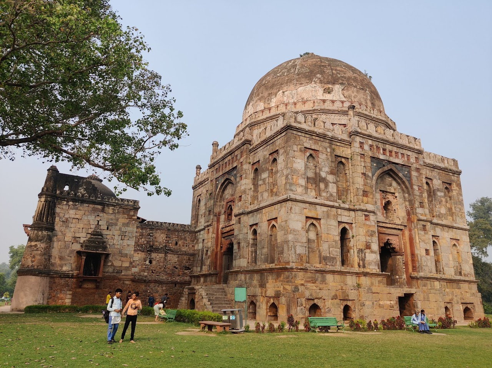
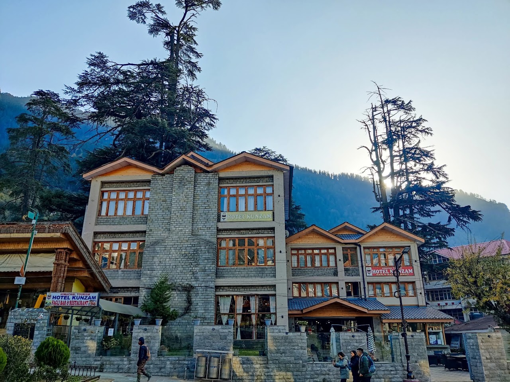
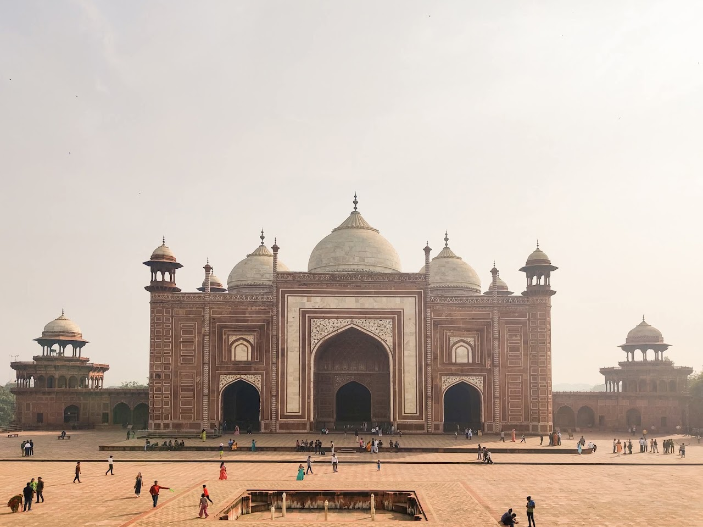
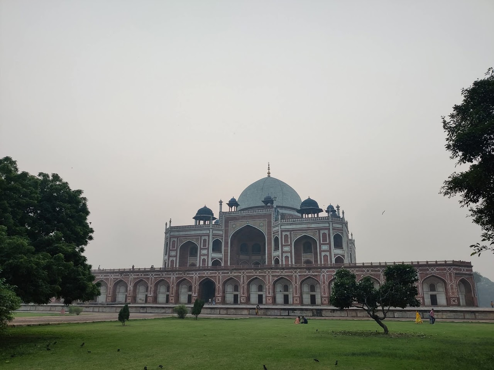